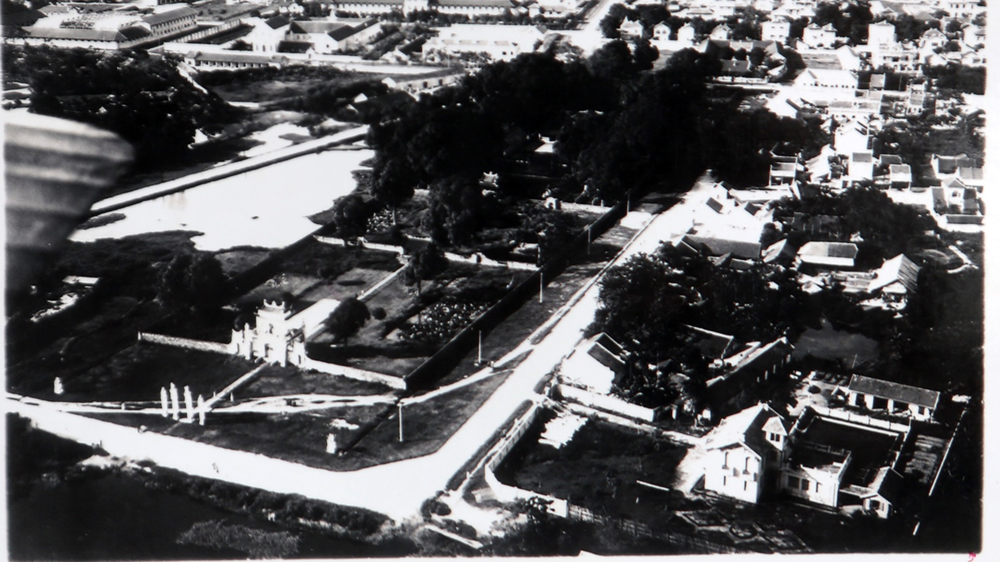
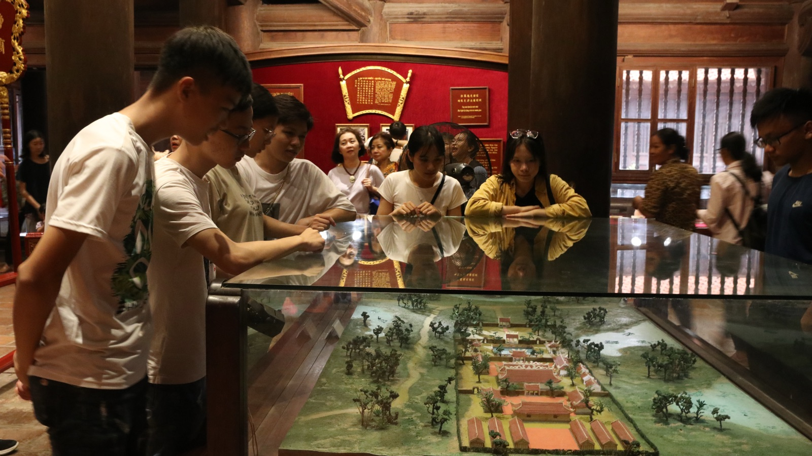
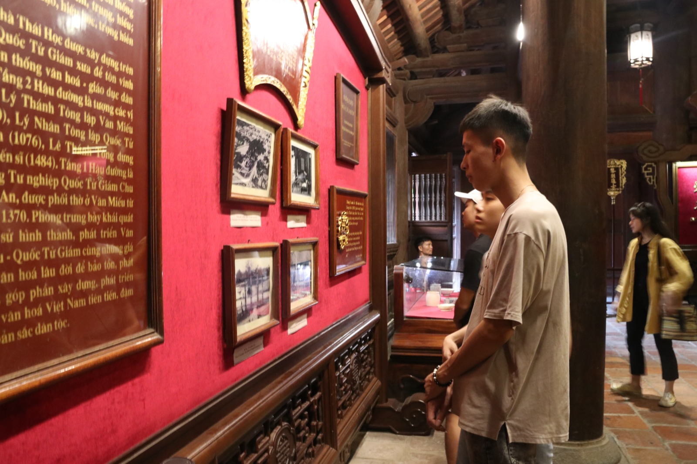

Khu trưng bày thường xuyên đặt tại tầng 1 nhà Hậu Đường, khu Thái Học. Không gian trưng bày giới thiệu khái quát lịch sử hình thành và phát triển của Văn Miếu – Quốc Tử Giám và lịch sử khoa cử Nho học Việt Nam.
Nội dung trưng bày
- Lịch sử thành lập Văn Miếu và Quốc Tử Giám (1070 – nay)
- Hệ thống giáo dục Nho học và chế độ thi cử qua các triều đại
- 82 Bia Tiến sĩ — bản dập, nội dung văn bia và ý nghĩa Di sản UNESCO
- Hiện vật khai quật tại khu Quốc Tử Giám — đồ gốm, vật liệu kiến trúc
- Sắc phong, văn bản Hán – Nôm gốc và bản phục dựng
- Văn phòng tứ bảo (bút, mực, nghiên, giấy) qua các thời kỳ



Thông tin tham quan
| Vị trí | Tầng 1, Nhà Hậu Đường – Khu Thái Học |
|---|---|
| Diện tích | Khoảng 800m² |
| Vào cửa | Bao gồm trong vé tham quan di tích |